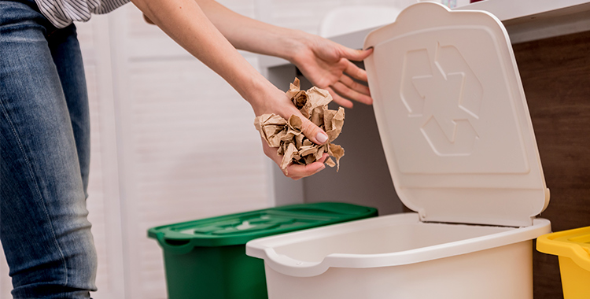

Como fazer corretamente a separação do lixo de sua casa
Por que é importante fazer a separação do lixo
A separação e o encaminhamento correto do lixo possibilitam a reutilização, a reciclagem, a compostagem, o aumento do tempo de vida dos aterros sanitários e menor impacto ambiental.
O que é reciclável?
Os materiais recicláveis poderão retornar à cadeia produtiva para virar o mesmo produto ou itens diferentes dos originais. Por exemplo: folhas e aparas de papel, jornais, revistas, caixas, papelão, garrafas (pet), recipientes de limpeza, latas de cerveja e refrigerante, canos de plástico, esquadrias, arame, potes de produtos alimentícios, embalagens em geral, entre outros.
Os produtos eletroeletrônicos e seus componentes, como notebook, celular, pilhas, baterias e eletrodomésticos, o óleo de cozinha e os móveis devem ser entregues em pontos de coleta específicos.

O que não vai para o lixo reciclável?
Nem todo o lixo doméstico é reciclável. O Ministério do Meio Ambiente orienta sobre os itens classificados como não recicláveis. Os mais comuns são:
• Papel-carbono, etiqueta adesiva, fita crepe, fotografias e filtro de cigarros; papel higiênico, copos de papel, papel-toalha e guardanapos sujos;
• Caixas de papelão com resíduos orgânicos, gordura ou qualquer tipo de sujeira (caixa de pizza, por exemplo);
• Fraldas descartáveis e absorventes íntimos;
• Cabos de panelas e tomadas;
• Clipes, grampos, esponjas de aço e canos;
• Espelhos, cristais, cerâmicas e porcelana.
Esses materiais devem ser descartados no lixo comum.